股票想查基本面，ETF 想做对比，基金想看基金经理和投资方向。
这些问题都能问 AI。可拿到一大段回答之后，我还是会关心：里面的数字从哪来，资料是不是最新的？
如果要自己找财报、翻基金资料、整理表格，再交给 AI 分析，准备工作就已经花了不少时间。
我更想让它直接调用工具，把需要的资料先查出来。
中信建投的蜻蜓 Skill 广场就提供了这样一组工具：能接进 WorkBuddy，页面还开放了限时免费体验。
股票、ETF、基金都有对应工具，还能看财报、算历史定投。先用免费额度试一个自己关心的问题，就能看看它能帮上什么忙。
六个工具，分别解决什么问题？
先打开中信建投的蜻蜓 Skill 广场。
页面上有六项工具。Skill 可以先理解成一项具体技能，不用研究技术原理，先看它能查什么。
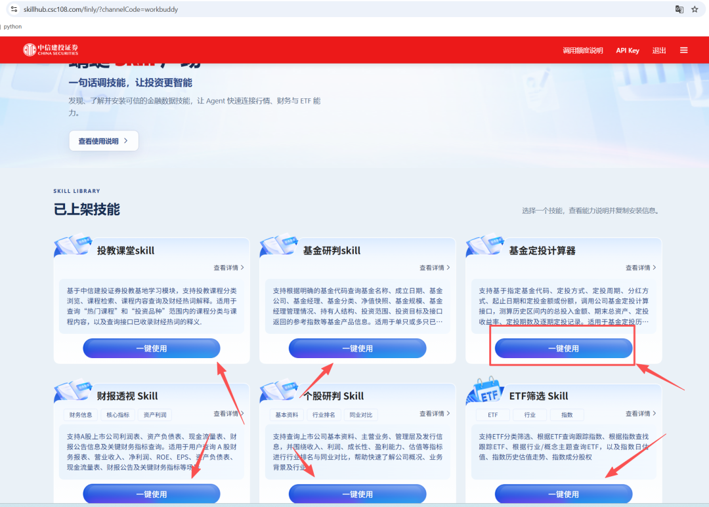
个股研判：查一家公司的基本情况。
关注一只股票，却还没弄清公司靠什么挣钱？可以从主营业务、收入、利润和同行对比开始查。
财报透视：把几个关键数字放到一起看。
收入增长了多少？利润有没有跟上？现金流怎么样？它提供三大报表和相关指标的查询入口，方便把这些问题放在一起看。
ETF 筛选：弄清同一个方向有哪些产品。
同一个方向有多只 ETF，先查它们跟踪什么指数；已经选定指数，也可以反过来找相关 ETF，再看指数估值等信息。
基金研判：了解基金背后的情况。
除了涨幅，还能查基金规模、基金经理、投资范围、持有人结构等资料，比较时多看几个角度。
基金定投计算器：把历史定投过程算一遍。
设置投入金额、周期和起止时间，查看历史区间的投入、期末资产和收益情况。这里算的是过去，不是承诺未来能赚多少。
投教课堂：遇到不懂的概念，先补上这一课。
财经热词、投资品种和基础课程，也有查询入口。
不用把六个都装一遍。你现在最想弄清什么，就先选对应的工具。
限时免费，额度在哪里看？
我觉得这个入口值得分享，因为它给了一个先体验、再判断的机会。
截图里的弹窗直接写着“限时免费体验”。
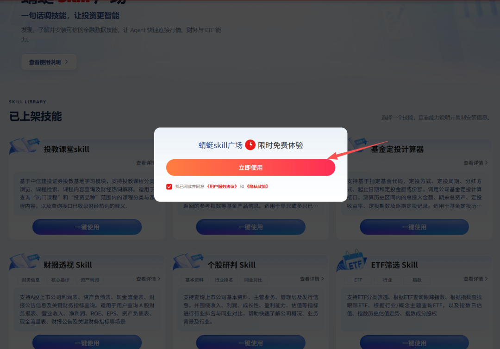
另外，页面顶部有“调用额度说明”。截图中，ETF 筛选、个股研判、财报透视等项目显示的每日调用上限为 1000 次。
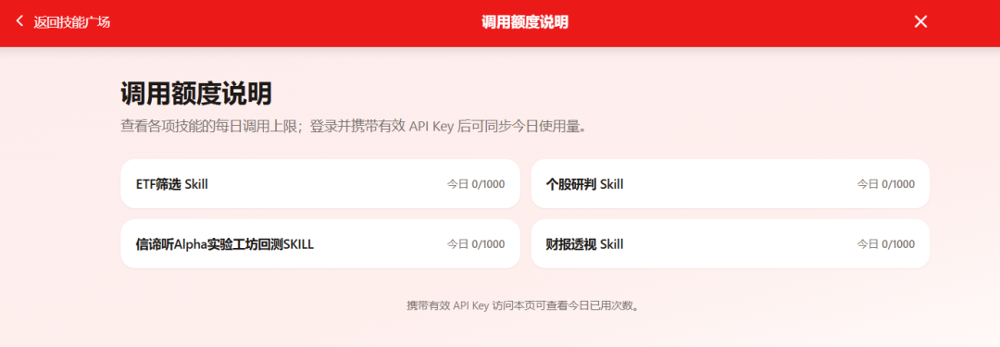
这里要分清楚：这是金融服务的调用额度，不等于可以在 WorkBuddy 里免费聊 1000 次。一段任务也可能调用工具多次。
截图时页面开放限时免费体验。具体活动期限、各项技能额度，以及 WorkBuddy 自身的使用消耗，以登录后的页面为准。
不用为了体验先把六项都装好，挑一项自己需要的就行。
把工具装进 WorkBuddy，不用自己写代码
WorkBuddy 是一个能调用工具的 AI 工作台。这里演示的是“在官方页面选工具，再交给 WorkBuddy 安装”这条路径。
先在蜻蜓 Skill 广场完成手机号登录，然后点击右上角的“API Key”。
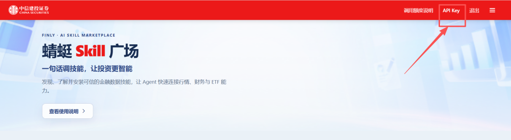
API Key 就是调用服务时使用的密钥。官方说明写明，手机号登录后系统会自动生成，可以在这里查看并复制。
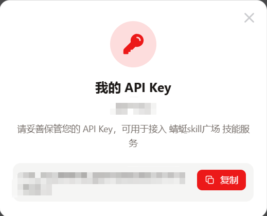
密钥自己保存，用于自己的工具配置，不要跟着文章或截图公开。
接着选一个需要的工具，打开“一键使用”，查看说明。
这里用 ETF 工具演示安装步骤。其他工具也可以从各自的使用入口查看指引。
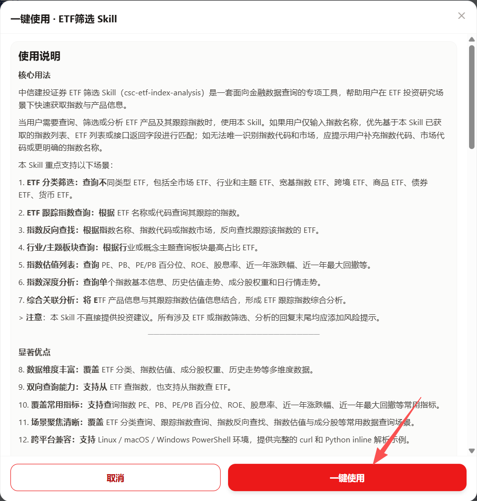
官方提供了“对话安装”的方式：复制页面给出的安装内容，发给 WorkBuddy，让它完成下载与安装。
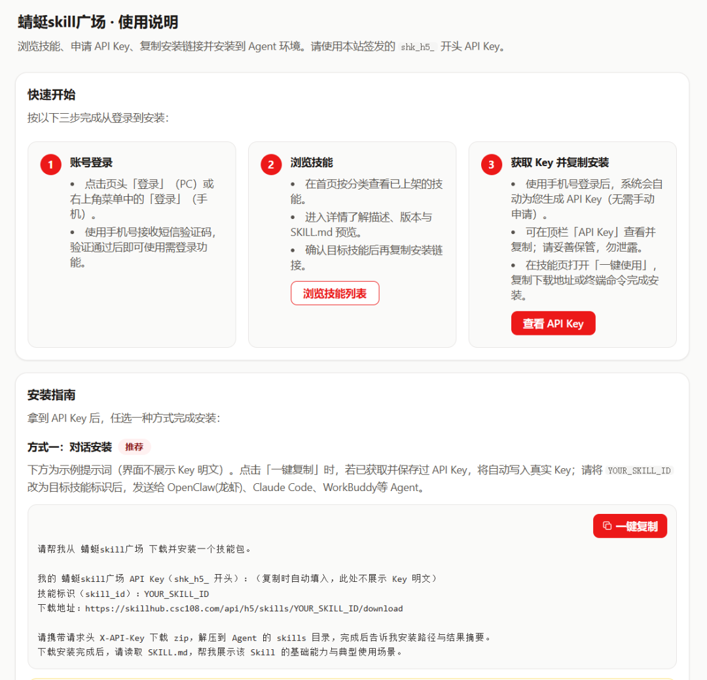
直接使用自己登录后页面生成的安装文本，不用照着截图手敲命令。图片里打码的内容也不需要照抄。
在这次操作截图里，WorkBuddy 返回了安装完成的信息，还整理出了这个技能的主要用途。
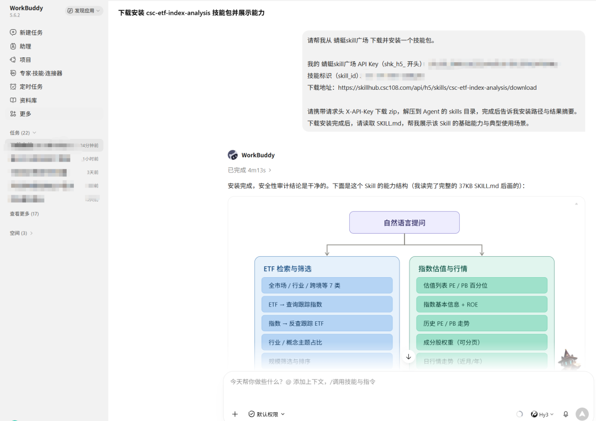
安装后，新建任务，在输入框的技能菜单里搜索对应技能并选中。截图里能找到的是 ETF 工具。
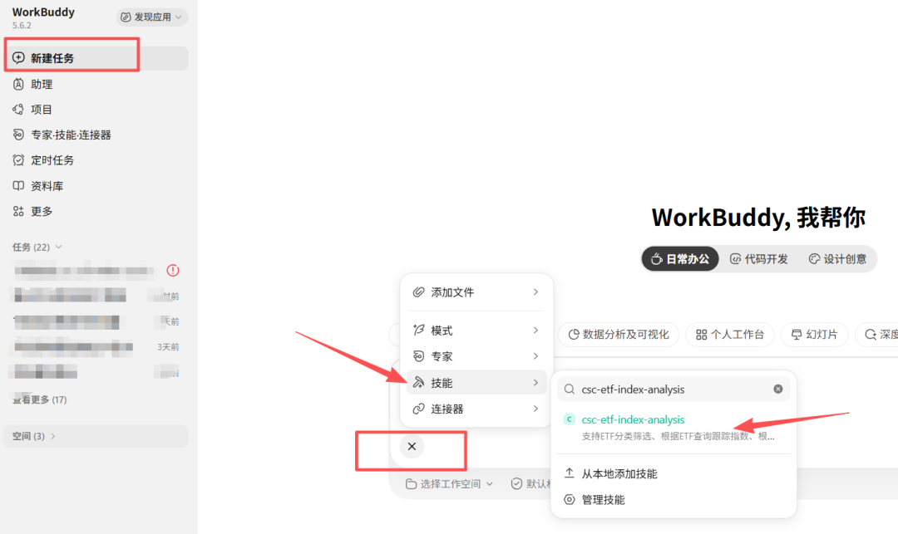
如果需要检查配置，可以这样问：
请检查当前环境中的 CSCAPIKEY 是否已经配置，只回答“已配置”或“未配置”，不要显示具体 Key。
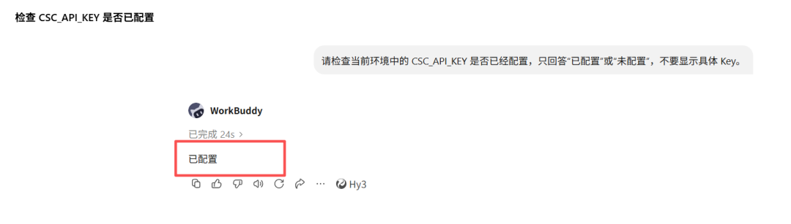
到这里，下一步就是让它实际查一次数据。
别只问“怎么样”，把问题问具体
研究公司，可以先问：
请使用已安装的中信建投财报工具，查询我指定公司最近三个完整年度的营业收入、净利润和经营活动现金流净额，整理成表格。注明报告期、单位和来源，缺失项直接说明。先列数据，再解释变化，不给买卖建议。
比较基金，可以问：
请使用基金研判工具，比较我指定的两只基金，列出基金类型、规模、基金经理和投资范围。说明哪些信息可以直接比较、哪些口径不同，并注明数据日期与来源。
想了解定投，可以问：
请使用定投计算器，在同一个历史区间、相同累计投入金额下，对比两种定投周期的结果。列出投入总额、期末资产和收益计算口径；如果工具不支持这样的设置，先说明，不要自行编造结果。
这些是可以尝试的任务要求，实际返回内容取决于所选技能和当前权限。
截图里的实际查询，是让 ETF 技能查找沪深300相关产品，并查询指数估值信息。
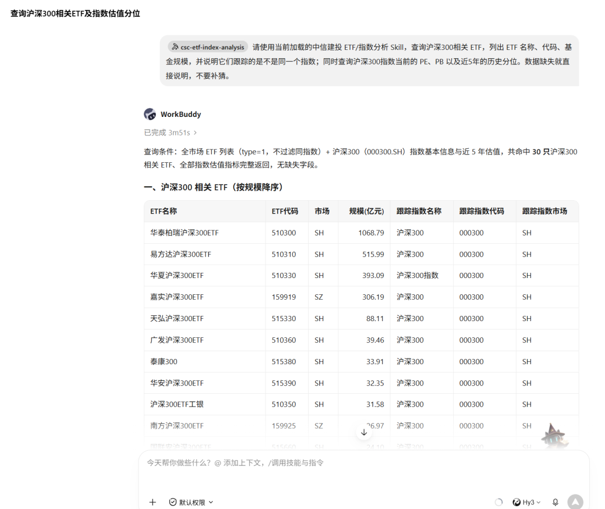
返回的列表里能看到规模、跟踪指数等字段。先把这些信息摆在一起，就有了继续比较的起点。
截图展示的是这次查询的返回结果，具体数字仍要核对日期与原始资料；财报、基金和定投的问法则可以按自己的需求继续尝试。
同样的思路，也可以用于公司、财报和基金研究：先查到资料，再讨论这些资料意味着什么。
免费体验，先用来查一个真问题
投资里最吸引人的问题，当然是“有没有挣钱的机会”。
但对我来说，想判断机会，先得有值得核对的资料。
这组工具让我感兴趣的地方，是把资料查询接到了 AI 对话里。想研究股票，就从公司和财报开始；想比较 ETF 或基金，就让它先列出差别。
免费额度正好可以拿来做一次小尝试：选一个你本来就想查的问题，看看它能查到什么、还缺什么。
工具帮我少翻一些页面，判断还是得由我来做。
感谢点个关注，持续分享 AI 实战和各种有意思的工具。
别忘了点个 赞 👍 + 在看 ❤️，感谢支持！